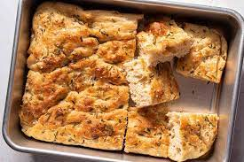

Focaccia

Description
make a simple, homemade version of this classic Italian bread. Serve our rosemary focaccia alongside pasta dishes or enjoy with green salads.
Prep: 25 mins
Cook: 20 mins
Serves: 12
Ingredients
- 500g strong bread flour, plus extra for dusting
- 7g dried fast action yeast
- 2 tsp fine sea salt
- 5 tbsp olive oil, plus extra for the tin and to serve
- 1 tsp flaky sea salt
- ¼ small bunch of rosemary, sprigs picked